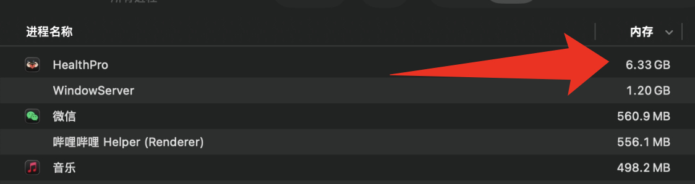
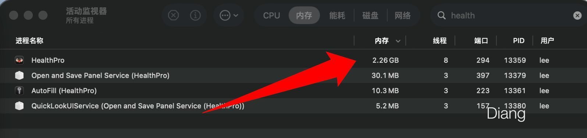

打破围城：将 Apple Health 导出的 XML数据转换为友好的 CSV 格式
01. 前言：Apple Health 的数据围城
导出过 Apple 健康数据的朋友都深有体会：苹果给我们的不仅是数据，更是一道技术门槛。
1、文件巨大： 数 GB 的 导出.xml。
2、格式混乱： 记事本打不开，Excel 内存溢出。
3、AI 难读： 原始 XML 的层级结构让 LLM在处理长周期趋势时产生幻觉。
为打破这道门槛，我开发了Apple Health Pro🍎。 前往 GitHub 下载安装包
02. 用户指南：3 步实现“健康数据自由”
第一步：iPhone 端的原始导出
在健康 App 中点击头像 -> “导出所有健康数据”。这一步你将得到一个 导出.zip。
第二步：Apple Health Pro 精准洗数
启动应用（支持 macOS ， windows 以及 Linux 三平台）
1、加载： 点击 SELECT DATA ARCHIVE并选择你在上一步导出的 ZIP 压缩包。
2、过滤： 在 IDENTIFIED SOURCES 列表中勾选你信任的来源，剔除冗余的第三方 App 记录。
3、隐私和时间： 在 Date range 输入你期望的起止日期，同时选择是否隐藏设备名（这一步会将初始数据的设备名覆盖为 AppleHealthPro_device
4、执行： 点击 EXECUTE EXPORT。

第三步：让 AI 成为你的“数字私人医生”
导出的 CSV 已经过专业的维度归纳，**在最新的 v8.6.0 版本中，已全面升级为 15 大医疗与运动维度。**如下方表格所示，如果未提取到相关数据则不会生成对应文件。
| 分类序号 | 维度名称 (Category) | 导出文件名 (Exported CSV) | 核心指标涵盖 (Key Metrics Included) |
|---|---|---|---|
| 01 | 核心心血管 (Heart & Cardio) | 1_Heart_Cardio.csv |
心率、静息心率、HRV (心率变异性)、步行平均心率 |
| 02 | 身体成分 (Body Metrics) | 2_Body_Metrics.csv |
体重、BMI、体脂率、瘦体重、身体水分 |
| 03 | 日常基础消耗 (Daily Activity) | 3_Daily_Activity.csv |
步数、活动能量消耗、静息能量消耗、步行距离、爬楼层数 |
| 04 | 睡眠与恢复 (Sleep Recovery) | 4_Sleep_Recovery.csv |
睡眠分析 (核心、深度、快速动眼、清醒等状态) |
| 05 | 步态与行动力 (Mobility & Gait) | 5_Mobility_Gait.csv |
步行速度、步长、不对称性、双足支撑时间、步态稳定性 |
| 06 | 生殖与生理健康 (Reproductive) | 6_Reproductive.csv |
经期记录、排卵测试结果、宫颈粘液质量 |
| 07 | 生命体征 (Vitals & Respiratory) | 7_Vitals_Respiratory.csv |
血氧饱和度、呼吸率、体温、血压 |
| 08 | 跑步硬核动态 (Running Dynamics) | 8_Running_Dynamics.csv |
跑步功率、垂直振幅、触地时间、跑步步幅、跑步速度 |
| 09 | 骑行表现 (Cycling Stats) | 9_Cycling_Stats.csv |
骑行功率、踏频、骑行速度、功能性阈值功率 (FTP) |
| 10 | 游泳与水域 (Swimming & Water) | 10_Swimming_Water.csv |
游泳距离、划水次数、水下深度、水温 |
| 11 | 通用体能训练 (Workouts & Training) | 11_Workouts_Training.csv |
力量训练、瑜伽、HIIT、传统跑/骑/游等所有手动开启的运动记录 |
| 12 | 环境与感官 (Environment & Senses) | 12_Environment_Senses.csv |
日照时间、环境音量暴露、耳机音量暴露 |
| 13 | 营养与摄入 (Nutrition & Hydration) | 13_Nutrition_Hydration.csv |
膳食能量、碳水、蛋白质、饮水量、咖啡因摄入 |
| 14 | 心理状态与正念 (Mindfulness & Mental) | 14_Mindfulness_Mental.csv |
心理状态打卡、情绪追踪、正念冥想时间 |
| 15 | 症状与病史 (Symptoms & Illness) | 15_Symptoms_Illness.csv |
头痛、咳嗽、疲劳等手动打卡的各类症状记录 |
你可以直接将这些文件喂给 ChatGPT 或 Gemini 等大模型，配合我推荐的提示词：
[你是一名具备运动生理学、 心血管医学 和健康数据建模能力的专业分析师。我将提供Apple Health原始数据（CSV），请基于数据进行接近专业体检级别的分析，并严格按照以下结构输出：首先给出【一句话结论】，直接判断整体健康状态（健康 / 亚健康 / 风险状态），不得模糊；然后进行【生理系统拆解分析】，从心血管系统（心率、HRV、静息心率）、神经系统（基于HRV分析交感/副交感平衡）、睡眠恢复系统、代谢与活动水平四个层面分析，必须解释背后的生理机制而非表象；接着进行【趋势建模】，基于时间序列判断是否存在周期性波动、长期改善或恶化趋势]
03. 技术深挖：我是如何驯服 15GB+ “数据巨兽”的？
面对极端的全量 Apple Health 数据（部分极客用户的 导出.xml 高达 13GB 以上），传统的读取方式会让内存瞬间红温宕机。在 v8.4.0 版本中，我重构了底层的解析引擎：


1、 O(1) 流式清洗管道 (CleanStream) 苹果的 XML 中偶发带有 \x0b 等乱码字符，常规的 f.read().replace() 会将十几个 G 的文件瞬间载入物理内存。我写了一个流式清洗代理，将内存消耗从 O(N) 全量读取降维至 O(1) 按块读取，彻底消灭了闪退的元凶。
2、C 语言级内存池去重 (String Interning) 在 3000 万条健康记录中，type和 unit存在海量重复。我调用了 Python 底层的 sys.intern() 机制，让几百万个相同的字符串在内存中共享同一个物理地址，再辅以 gc.collect() 强制垃圾回收，打破了 Python 字典对象的物理内存瓶颈。
3、智能安全分割 (Smart Chunking) 为了防止导出的巨型 CSV 撑爆用户的 Excel，系统内置了自动分卷算法。经过压力测试，我将分卷阈值精准踩在 88 万行（单文件约 90MB），这是兼顾数据连续性与软件加载稳定性的绝佳甜点。
04. 开源与未来
目前项目已在 GitHub 开源，欢迎各位 Star 指教。
GitHub 地址： leecdiang/Apple-Health-Pro
未来计划： 支持更多运动指标提取，图标显示数据 …